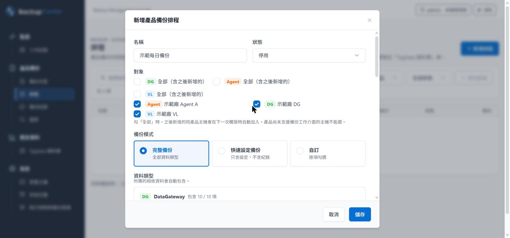
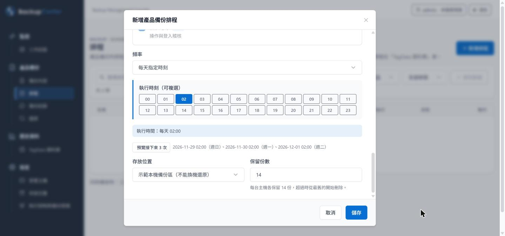
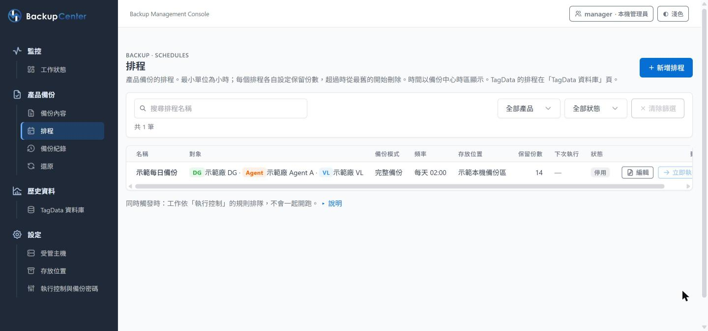

排程與保留
讓備份中心定時自動備份產品。最小單位為小時；每個排程各自設定保留份數，超過時從最舊的開始刪除。時間以備份中心時區顯示。TagData 的排程在第 8 章。
新增產品備份排程

- 按「新增排程」。
- 填「名稱」（例：每日設定備份），「狀態」選「啟用」。
- 在「對象」勾選主機，或勾某產品的「全部（含之後新增的）」：之後新增的同產品主機會在下一次觸發時自動加入。
- 選「備份模式」與資料類型（同手動備份）。
- 設定「頻率」（見下一節），按「預覽接下來 3 次」確認時間。
- 選「存放位置」與「保留份數」，按「儲存」。
排程出現在清單，顯示對象、備份模式、頻率、存放位置、保留份數與下次執行時間。
失敗時先查
- 儲存時顯示錯誤：名稱、對象、頻率或存放位置未填。
- 到點沒執行：尚未設定備份密碼，或排程是停用狀態。
設定頻率
- 每 N 小時
- 選間隔與起始時刻。
- 每天指定時刻
- 可複選多個整點。
- 每週指定星期與時刻
- 可複選星期，再選時刻。
- 每月指定日期與時刻
- 1～28 日或「最後一天」，再選時刻。

- 在「頻率」下拉選一種。
- 依畫面選時刻或日期，下方「執行時間」會即時說明。
- 按「預覽接下來 3 次」確認。
預覽顯示接下來 3 次的執行時間。
失敗時先查
- 預覽顯示「頻率設定不完整」：每天、每週至少要選一個時刻或星期。
保留份數與自動清理
- 在「保留份數」輸入 1～999。
- 畫面提示「每台主機各保留 N 份，超過時從最舊的開始刪除」。
排程備份依份數自動清理；手動備份不在清理範圍內。
清理會刪除存放位置上的備份檔，請依還原需求設定足夠的份數。
立即執行、編輯與停用排程

- 按「立即執行」：馬上依這個排程的設定排入一次工作（停用的排程不能按）。
- 按「編輯」修改內容；「狀態」改「停用」可暫停排程，不會刪除既有備份。
- 不再需要時在編輯視窗按「刪除」。
清單的狀態與下次執行時間更新。
多個排程同時觸發時，工作會依第 11 章的規則排隊（同時觸發時依 DG → Agent → VL 的順序）。上一次同排程同主機還沒完成時，這次會略過並在「下次執行」欄記下原因。
失敗時先查
- 「下次執行」下方出現黃字：上一次還沒完成而略過，看原因後調整頻率或逾時。